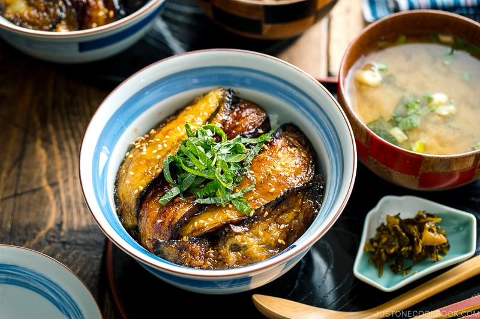

Eggplant Donburi

What you can hope your finished dish will look like!
Another rice bowl dish, eggplant donburi or eggplant bowls offers an unagi-like eggplant fried with sauce, over rice.
Ingredients
- 1 - Large Eggplant
- Cornflour
- 2 Cups - White Rice
- Green Onions
- Shoyu
- Mirin
- Sake
Steps
- Slice eggplant in half lengthwise, and then into slices.
- Coat eggplant in cornflour to prevent it from absorbing too much oil, and then fry in veggie oil.
- Once fried on both sides, place on paper towel on cutting board to remove excess oil.
- In a bowl, mix together sauce mixture of 2 tbps of shoyu, mirin, and sake.
- Replace eggplant in bowl, and add sauce to cook together.
- Watch careful to avoid burning the sauce.
- Serve over rice with sliced green onions and sesame seeds.